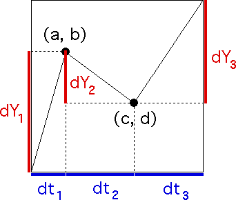

|  | ||||||
| The basic construction is an instance of initiators and generators. | ||||||
| We take | ||||||
| the initiator to be the line segment from | ||||||
| the generator to be a broken line from | ||||||
| The space and time increments are | ||||||
| ||||||
| The only variation on the standard initiator-generator construction is the introduction of an element of randomness, as we shall see. |
Return to Random Fractal Cartoons.